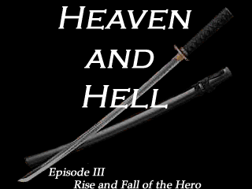

| This Game takes place in a time period similar to the early 1900's late 1800's. One man has built a great futuristic city in one night and he has declared war on the world, promising to take everyone to see god. You are Lieutenant Ayen Karparl. You must work with the spy organization in his city and find out what his plans are and steal his technology. Along the way you discover an age-old prophecy that is about to come to life once again. Will Ayen be caught up in this endless cycle of violence? Or will he try to change the world after discovering the truth? |
Genre: RPG
Made with RPG Maker 2000
Operating System Support: Windows
Mission Briefing (Online Game Manual)
Screenshots
Download
My Email:
fmatthew5876@gmail.com